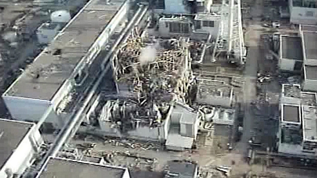

Chegou a hora dos poblemas
Que não são poucos...
No quesito saúde, 130 pessoas morreram de câncer e as pessoas que habitam áreas mais afetadas demonstram uma maior probabilidade de desenvolver câncer. Problemas de tireoide já foram relatadas entre 40% das crianças na área de Fukushima. Além disso, muitas pessoas apresentaram estresse pós-traumático e depressão após o acidente. No quesito ambiente, há uma questão extremamente grave, pois houve a contaminação marítima. De acordo com a Tepco (Tokyo Electric Power Company), um total entre 20 a 40 trilhões de becquerels de trítio radioativo entraram no Oceano Pacífico desde o início do desastre nuclear. Isso irá afetar nossa alimentação, por causa da contaminação da cadeia alimentar, através da bioacumulação e biomagnificação. Já foram identificados peixes com níveis de radiação 124 vezes a mais que os padrões estabelecidos e plantas mutadas por causa do acidente.
Mais de 20 mil pessoas morreram ou desapareceram e cerca de 160 mil foram deslocadas. Dezenas de milhares delas levaram vários anos para poder voltar para seus lares. A água ultrapassou o muro de proteção da usina nuclear Fukushima Daiichi e inundou o sistema elétrico, incapacitando o resfriamento dos reatores
Especialistas dizem que uma força de trabalho de centenas ou mesmo milhares levariam anos ou décadas para limpar a área. Em 20 de março, o chefe de gabinete do secretário Yukio Edano anunciou que a estação seria desativada logo que a crise acabar.